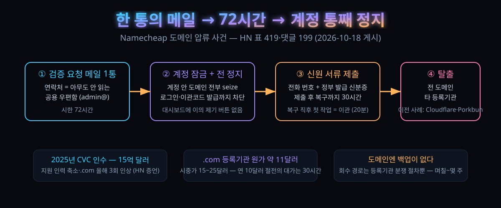

10/18 새벽, 도메인 7개가 한 통의 메일과 72시간 뒤 사라졌다 — 등록기관 대시보드에 '이의 제기' 버튼이 없던 30시간

결론부터 하자. 도메인은 백업이 없는 유일한 자산이고, 그 자산 전부를 한 등록기관의 한 계정에 넣어둔 상태는 '언제 꺼져도 이상하지 않은 대기 상태'다. 오늘 이야기는 그 문장의 실측 사례다.
10월 18일(현지) 새벽, 한 시스템 관리자가 자기 회사 도메인들이 한꺼번에 꺼진 채로 아침을 맞았다. 등록기관 Namecheap이 계정을 잠그고 도메인 전부를 정지·압류 상태(제목 원문 표현으로는 seizure)로 돌린 것이다. 트리거는 연락처로 등록한 메일 주소로 날아온 검증 요청 한 통, 그 안의 시한은 72시간이었다. 본인 확인에 필요한 서류는 대부분 제출한 상태였지만, 계정을 되찾기까지 걸린 시간은 통산 30시간이었다.
해커뉴스에 옮겨진 이 스레드는 하루도 안 돼 표 419·댓글 199가 됐다. 흥미로운 건 댓글 온도가 아니라 결이다. Namecheap을 두둔하는 글은 거의 없고, 대신 각자 등록기관에서 당했던 같은 모양의 사고록이 쌓였다. 사고 경위, 업계 구조, 그리고 오늘 저녁에라도 끝낼 수 있는 예방 목록까지 정리했다.
30초 요약
| 항목 | 내용 |
|---|---|
| 무슨 일 | 10월 18일(현지) r/sysadmin 사연이 해커뉴스로 옮겨가 하루 만에 표 419·댓글 199. 한 관리자의 계정 안 도메인 전부가 Namecheap 쪽 검증 요청 메일에 72시간 안에 응답하지 않았다는 이유로 정지·압류 상태로 전환됐다 |
| 요구 서류 | 댓글창에서 작성자가 직접 밝힌 항목은 본인 전화 번호와 정부 발급 신분증. 그 밖에 서류를 더 요구받았느냐는 질문이 붙었다 |
| 복구 시간 | 요청 서류를 모두 넘긴 뒤 계정 접근 회복까지 30시간. 작성자는 접근 직후 한 첫 작업이 도메인 이관이었다고 적었다. 이관 자체는 '예상과 달리' 20분 남짓 걸렸다 |
| 구조적 배경 | 2025년 사모펀드 CVC가 Namecheap을 15억 달러에 인수. 댓글창 추정은 비용 축소는 사람(지원 인력)에서, 수입은 가격에서 — .com 갱신가가 올해 들어서만 세 차례 올랐다는 증언이 달렸다 |
| 업계에 만연한 패턴 | ① 피싱성 메일 하나에 48시간 내 응답하지 않아 비즈니스 도메인이 통째로 꺼짐(복구까지 6시간 이상) ② 본인 도메인을 '프리미엄'이라 다시 분류해 1,500달러에 되팔기 시도 ③ 계정 연락처가 도메인 우편함에 있어 사고 때 로그인 자체가 막히는 순환 의존 |
| 이번 사고의 백미 | 대시보드에 '이의 제기' 경로가 존재하지 않는다. 연락처 메일은 사람이 안 읽는 공용 주소(admin@, domains@)인 경우가 많고, 정지는 사람이 아니라 규칙이 보낸 통보다 먼저 온다 |
| 오늘 할 일 | 연락처 메일을 사람이 읽는 주소로, 등록기관은 둘로, DNS는 등록기관 밖으로, 정지 시나리오는 문서로 — 아래 3. 바로 써먹기 표 |
1. 무엇이 터졌나
사건의 뼈대는 이렇다. 회사 도메인 일부를 오래전부터 Namecheap 한 계정에 넣어둔 관리자 하나가, 어느 날 아침 사이트가 안 열리는 데서 사고를 알았다. 원인은 도메인 자체의 만료도, 네임서버 장애도 아니었다. 등록기관이 '계정 정보를 확인하라'는 메일을 연락처 주소로 보냈고, 그 메일에 적힌 시한 72시간이 지났다는 이유로 계정을 잠그고 산하 도메인 전부를 정지 처리한 것이다.
여기서 '압류(seize)'라는 단어가 제목에 붙은 이유가 있다. 정상적인 도메인 정지는 DNS가 풀리지 않는 형태다. 이번 사례는 계정 단위로 잠기는 형태라, 사이트가 꺼진 것뿐 아니라 등록기관 패널에 로그인해 상태를 확인하거나 이관 인증코드를 뽑는 동작 자체가 막혔다. 복구는 서류를 다 낸 뒤 30시간 뒤였다.
작성자가 나중에 남긴 문장이 사고 성격을 한 줄로 요약한다. 72시간 요구는 병에 걸렸다 — 휴가 중이거나, 입원 중이거나, 혼수상태면 어쩌나. 그리고 그 문장 옆에 붙은 고백: 7월에도 같은 경고를 본 적 있다. 그때 몇 개는 옮겨놨으면 됐을 텐데, 중간에 잊었다.
하필 '7월 경고'가 왜 걸려 있었는지는 원글 원문 전체가 아니라 댓글창으로만 확인되는 부분이라, 이 글에서는 추정임을 밝히고 넘긴다. 확실한 건 문서화된 본인 확인 절차가 등록기관 내부에 실재한다는 점이다 — Namecheap 본인 지원 문서에도 계정 잠금 사유로 사기 의심 결제, 결제 분쟁, 그리고 '이용약관 위반 감지'가 올라 있고, 잠기면 서비스가 함께 정지될 수 있다고 적혀 있다.
2. 왜 대단한가
① 도메인은 '복원'이 없는 자산이다
댓글창에서 가장 많이 반복된 논점이다. 파일 서버가 죽으면 백업에서 세운다. 노트북을 잃으면 새 계정을 등록한다. 데이터베이스는 시점 복원이 있다. 메일 계정이 털리면 비번을 갈아끼운다. 그런데 도메인은 이 목록에 대응 항목이 없다. 같은 도메인을 '다시 갖다 쓰는' 수단은 등록기관 분쟁 절차뿐이고, 그 절차는 빨라야 며칠, 늦으면 몇 주이며, 자기 티켓이 대기열을 건너뛸 만큼 비싸게 낸 요금도 없다. 그동안 메일은 반송되고, 사이트는 마지막 캐시를 계속 서빙하고, MFA 푸시는 전화를 못 걸고, 고정한 인증서는 갱신을 멈춘다.
② 한 계정에 몰아둔 구조가 사고 반경을 결정한다
중소 규모 조직의 표준 상태가 이렇다: 등록한 모든 도메인이 등록기관 하나, 결제 카드 하나, 그리고 통보 메일이 닿는 주소 하나. 그 주소는 대개 admin@이나 domains@ 같은 공용 우편함이고, 세 명이 '읽지 않음' 수로만 정리할 뿐 실제로 아무도 안 읽는다. 이번 사고의 72시간 최후통첩은 바로 그 우편함에 떨어졌다.
③ 값싼 등록기관의 값은 지원 인력이었다
2025년 CVC가 Namecheap을 15억 달러에 사들인 뒤의 흐름을 댓글창은 세 가지로 요약한다. 지원은 사람이 줄고 자동화가 늘었다. 그리고 .com 값이 올해에만 세 번 올랐다. 이 업계에서 가격이 오르는 이유는 사실 네 개뿐이라는 업계인 증언도 붙었다. 등록기관이 마진을 늘리려는 경우, 최상위 레지스트리(Verisign)가 값을 올리는 경우(계약상 6년 주기 마지막 4년간 매년 7%씩 인상 가능 — 2024년 인상, 다음 인상은 2026년 11월 1일), 중간 유통사가 마진을 붙이는 경우, 환율 차이를 메우는 경우. 즉 '우리가 배신해서'는 그 자체로 원인이 아니지만, 배신이 마진 인상과 겹치면 고객은 구분하지 못한다.
④ 'cheap'이라는 상호가 예약된 결말이었다는 진단
가장 길게 공감받은 논평 계열은 이렇다. 도메인 등록은 원가가 거의 0에 가깝고 사회 전체가 쓰는 기능이다. 그것이 공공 서비스에서 상업 재화로 바뀌었을 때 나올 '혁신'의 종류는 대체로 이 모양이라는 것. 한 발 더 나가면 사업의 존재 이유가 '싼 것'인 업체는 결국 경쟁자를 따라 마진 0 아래로 내려가고, 그때 남는 자산은 고객 계약 묶음이라 사모펀드가 사간다는 서사까지 연결된다. 한 해 10달러를 아끼려다 30시간 동안 전사 이메일을 잃는 계산은, 개인이 아니라 구조가 틀린 셈이다.
3. 바로 써먹기 — 오늘 저녁 20분 점검표
도메인 관련 사고는 예방비용이 사고비용과 자릿수 단위로 벌어진다. .com의 등록기관 원가는 댓글창 실측으로 약 11달러, 시중가는 15~25달러다. 연 10달러 이하를 아끼려는 결정이 회사를 부실 자금 상태로 몰고 있다는 게 저쪽의 진단이다. 아래는 댓글창과 등록기관 문서에서 실제로 작동한 것으로 확인되는 항목만 모았다.
| 점검 | 확인 방법 | 걸리는 시간 |
|---|---|---|
| 연락처 메일을 사람이 읽는 주소로 | 도메인 등록자(Registrant) 이메일이 admin@·domains@ 류 공용 주소면 개인·업무 메일로 교체. 교체 후 등록기관이 보내는 확인 메일(7일 시한)을 그 자리에서 클릭해 둔다 | 도메인당 2분 |
| 연락처 메일을 자기 도메인에서 떼기 | 등록기관 계정의 로그인 ID가 자기 도메인(예: company.com의 admin)이면 도메인이 꺼지는 순간 로그인도 죽는 순환 고리. 등록기관 밖에 메일 하나를 만들어 놓는다 | 10분 |
| 등록기관 둘로 쪼개기 | 모든 도메인을 한 계정에 두지 말 것. 최소 '차단되는 순간 치명적인 도메인' 하나는 다른 기관에. 댓글창에서 실제 이전 사례가 몰린 곳은 Cloudflare·Porkbun·Dynadot·INWX | 도메인당 20분 |
| DNS를 등록기관 밖으로 | 등록기관이 잠겨도 DNS가 따로 있으면 복구 시계가 주에서 시간으로 줄어든다. 단, Cloudflare에 몰면 '등록기관까지 Cloudflare'인 구간이 남는다 — 그 구간은 댓글창 증언대로 자체 이관 제약(CAA 재작성, 자체 네임서버 지정 불가)이 있다 | 1시간 |
| 정지 대응 절차 문서 | 대시보드에 '이의 제기'는 없다. ① 등록기관별 분쟁·제소 창구(URL·이메일)를 미리 적어둘 것 ② 등록기관을 통한 이관을 막는 ICANN 규정(이관 거부 시 제소 가능, 위반 시 등록 자격 박탈)을 인용 문구로 준비 | 30분 |
| 양도 잠금·2FA 점검 | 양도 잠금(registrar lock)은 남의 손에서 도메인을 지키는 대신 자기 손에서도 잠근다. 2FA는 TOTP로 두되 recovery 코드를 기관 밖 오프라인 보관소에. '전화 한 통에 2FA 제거' 사례가 이 댓글창에 실존한다 | 15분 |
한 가지 오해하기 쉬운 지점: 이관 속도는 예전 이야기가 아니다. 이번 사고 작성자가 기록한 체감은 '생각보다' 20분 남짓이었고, 다른 이용자들은 '몇 분'으로 답한다. 도메인 이관이 며칠 걸릴 것이라 가정하고 통째로 두는 결정을 미루는 편성이 낡은 것이다.
4. 해외 반응 쟁점
① 대체처는 어디인가 — 댓글창 표결은 Porkbun·Cloudflare로 몰렸다
"Namecheap 다음에 어디로 가나"가 댓글 절반을 차지했을 만큼 이번 스레드는 사실상 등록기관 추천 게시판이었다. 오른 쪽은 Porkbun(민간 소유, API 서포트, 팀 계정), Cloudflare(원가 판매), Dynadot, EU 쪽은 INWX·EuroDNS·TransIP, 그리고 NearlyFreeSpeech.net이 반복해서 등장했다. 반론도 붙었다. "cloudflare는 DNS와 등록기관을 겸하니까 위험(한 곳이 죽으면 전부 죽는다)", "Porkbun도 뒤로 Cloudflare DNS를 쓴다", "Dynadot은 시큐리티 퀘스천 4개를 요구한다". 그 와중에 나온 말 — "'Namesafe'가 아니라 Namecheap이라 불리는 데에는 이유가 있다."
② 사모펀드 소행이냐 — "PE가 문제" 대 "PE라는 말은 사후에 다 갖다 붙인다"
CVC 인수 사실에는 이론이 없다. 다만 "PE가 사라진 지원 인력의 원인"이라는 서사에 대해, 정반대 방향 질문이 나왔다. 대체 어떤 사모펀드를 말하는 건가 — 사후에야 어떤 기업이든 'PE에 인수됐다'는 설명이 되는 시대에 그 설명이 예측력을 갖나. 반대로 "PE에 인수된 기업에 3년 이상 장기 약정하지 말라"는 실용 결론은 양쪽 다 인정했다. 이 사고 이후 신규 구매를 미루겠다는 증언도 그 결론의 연장선에 있었다.
③ "그럴 만했다" 계열 — 2022년 러시아 고객 차단 소환
항상 나오는 반론 계열이다. Namecheap은 2022년 우크라이나 침공 뒤 러시아 등록 고객 서비스를 끊었고, 그때도 '통보 없이 도메인이 사라졌다'는 원성이 떴다. 제재는 유예 없이 하드스톱이라 회사가 며칠씩 시간을 줄 수 없다는 반박과, 제재가 맞더라도 처리가 그렇게는 안 보였다(이메일 한 통을 안 본 이란인 고객이 자기 도메인이 GoDaddy 경매에 3,500유로로 올라간 걸 발견했다)는 증언이 같이 달렸다.
④ AML·KYC가 도메인까지 — 신원 제출 요구의 적법선
요구 서류가 전화 번호와 신분증이었던 사연과 겹쳐, '돈세탁 방지·고객 확인' 의무가 도메인 등록까지 밀고 들어온 흐름 자체가 비판받았다. "ID 사본을 좌우 업체에 찍어 보내는" 시대에 도메인 등록은 예외가 아니라는 것. 반대편에선 제재·사기 탐지라는 실수요를 인정하면서도, "그 기준을 지킨다며 사람을 잠그는 데는 72시간밖에 안 쓰느냐"는 지점에선 둘 다 동의가 됐다.
⑤ 등록기관은 왜 이 모양인가 — 도메인의 공영 회귀론
"이건 시장화된 공공재의 예정된 결말이다"라는 댓글이 최상단 근처에 올랐다. 도메인 등록을 정부 손에 주자는 데서 그치면 또 다른 지옥이라, 대부분은 "그럼에도 자기 도메인 전부를 한 회사에 두지 말자"로 수렴했다.
5. 마시기 전 주의
첫째, 이 글의 사고 경위 서술은 1인 익명 제보에 근거한다. 원글은 r/sysadmin의 계정 미상 게시글이고, 해커뉴스 댓글창 스스로 "이건 Reddit의 익명 게시물이다. 신뢰도를 헤아리라"를 명시적으로 올렸다. 반박이 안 나온 이유이지 반박이 없는 게 아니다. 둘째, 30시간·20분 같은 수치는 작성자 체감값이고, 72시간 시한과 신분증 요구도 본인 진술 수준이다 — 공식 안내문이 아니라 개별 통지 내용이라 업체가 같은 절차를 모든 계정에 적용하는지는 확인되지 않았다. 셋째, CVC 인수 15억 달러와 올해 .com 3회 인상은 해커뉴스 이용자 증언으로, 보도 원문을 직접 대조한 값은 아니다. 넷째, 도메인을 '둘로 쪼개라'는 권고는 도메인이 여러 개일 때만 산수가 맞고, 도메인 두 개인 회사엔 관리비만 늘어난다. 다섯째, Verisign의 11월 1일 인상은 예고된 사실이지만 폭은 이번 글에서 추정하지 않았다.
한 줄로 접자. 도메인은 '고쳐 쓰는 법'이 없는 유일한 기반 자산인데, 대부분 그 자산 전부를 한 회사의 사내 규칙에 맡겨 놓고, 규칙이 보낸 메일을 아무도 읽지 않는다. 오늘 저녁에 고칠 수 있는 건 세 가지뿐이다: 연락처 메일, 등록기관 수, DNS 위치. 그 세 줄이 30시간과 3주를 가른다.
바로 가기
- 해커뉴스 발표 스레드 — Namecheap just seized and disabled all my domains
- Namecheap 계정 잠금 복구 안내 (지원 문서)
- Namecheap 등록 계약서 — 정지·해지 조항
같이 읽기
"우리 위키를 뒤진 게 OpenAI 봇이었다" — 위키미디어가 공개한 이상 트래픽 조사 — 이번 주 내내 플랫폼 쪽 '설명 없는 차단·정지'를 다룬 잔들 옆에, 이번엔 고객 쪽에서 설명 못 듣는 사건의 잔.
passkey는 왜 내 이름을 등록기관에 넘기나 — 원격 인증 승인권 논쟁 — 계정 회수의 결정점이 '누가 로그인했나'에서 '누가 계정을 소유하나'로 옮겨간 흐름을 먼저 읽은 10월 12일 잔. 이번 사고의 '전화 한 통 2FA 제거' 일화와 정확히 같은 급소다.